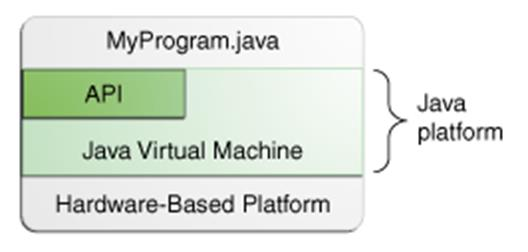

An island
A language
Year |
Development |
1990 |
Sun decided to developed special software that could be used for electronic devices. A project called Green Project created and head by James Gosling. |
1991 |
Explored possibility of using C++, with some updates announced a new language named “Oak” |
1992 |
The team demonstrated the application of their new language to control a list of home appliances using a hand held device. |
1993 |
The World Wide Web appeared on the Internet and transformed the text-based interface to a graphical rich environment. The team developed Web applets (time programs) that could run on all types of computers connected to the Internet. |
1994 |
The team developed a new Web browsed called “Hot Java” to locate and run Applets. HotJava gained instance success. |
1995 |
Oak was renamed to Java, as it did not survive “legal” registration. Many companies such as Netscape and Microsoft announced their support for Java |
1996 |
Java established itself it self as both 1. “the language for Internet programming” 2. a general purpose OO language. |
1997- |
A class libraries, Community effort and standardization, Enterprise Java, Clustering, etc.. |


A platform is the hardware or software environment in which a program runs. We've already mentioned some of the most popular platforms like Microsoft Windows, Linux, Solaris OS, and Mac OS. Most platforms can be described as a combination of the operating system and underlying hardware. The Java platform differs from most other platforms in that it's a software-only platform that runs on top of other hardware-based platforms.
The Java platform has two components:


language
Utilities
Input/Output
Low-Level Networking
Abstract Graphical User Interface
TCP/IP Networking
WWW and HTML
Distributed Programs
Application- A stand-alone program that can be invoked from command line . A program that has a “main” method
Applet- A program embedded in a web page , to be run when the page is browsed . A program that contains no “main” method

// HelloWorld.java: Hello World program |
Program Processing
javac HelloWorld.java
results in HelloWorld.class
java HelloWorld
Hello World
//HelloWorld.java public class HelloWorld extends Applet { |
Calling an Applet
<HTML> <TITLE>HELLO WORLD APPLET</TITLE> <HEAD>THE HELLO WORLD APPLET</HEAD> <APPLET CODE=“HelloWorld.class” width=500 height=500> </APPLET> </HTML> |
Applet Execution